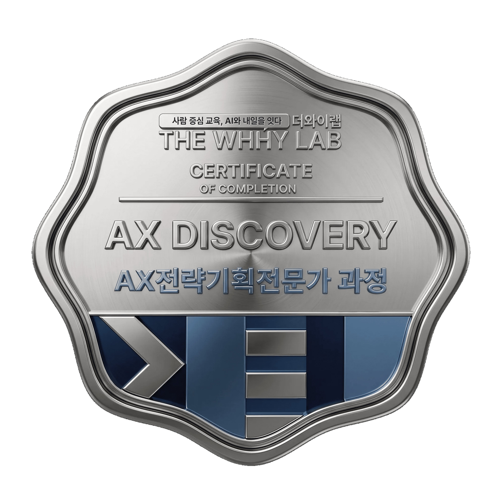
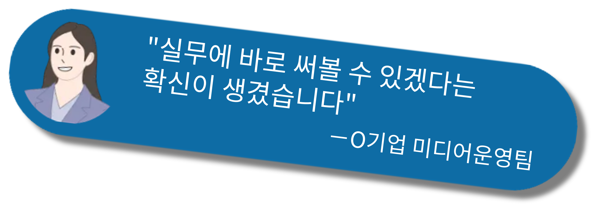
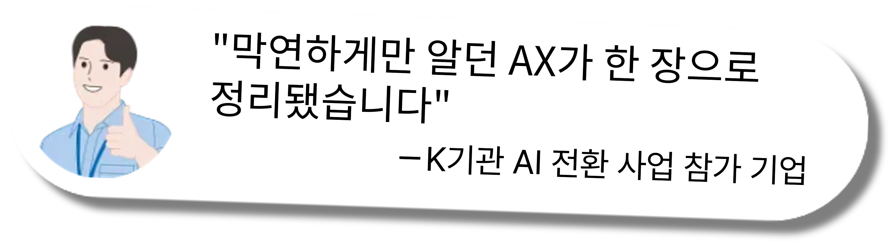
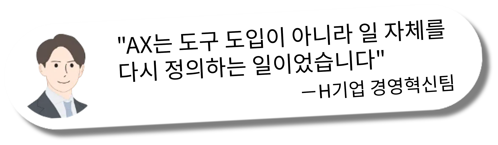
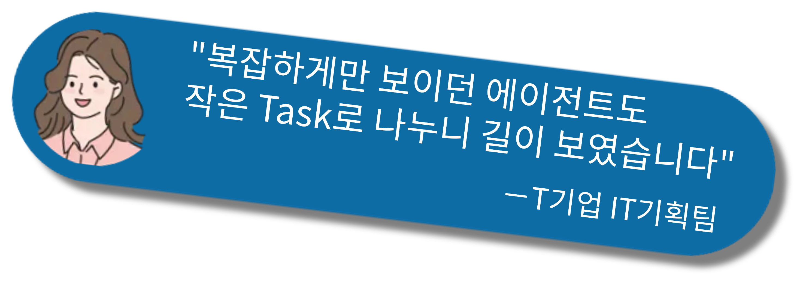

0%
AI 투자에서 수익을 내지 못한 기업
McKinsey에 따르면 AI 도입 기업의 64%가 "혁신 동력을 확보했다"고 말하지만, 실제 영업이익 기여도는 평균 단 5%에 그쳤습니다. 도구는 도입됐지만 성과는 없습니다.
챗봇을 붙이고, ChatGPT 계정을 나눠줬을 뿐, 일하는 방식 자체는 그대로였기 때문입니다.
조직도, 개인도 같은 함정에 빠집니다. AI 도구를 쓰는 것과 AI로 일하는 방식을 바꾸는 것은 전혀 다릅니다.
McKinsey에 따르면 AI 도입 기업의 64%가 "혁신 동력을 확보했다"고 말하지만, 실제 영업이익 기여도는 평균 단 5%에 그쳤습니다. 도구는 도입됐지만 성과는 없습니다.
성과를 낸 기업들의 공통점은 단 하나. 특정 AI 도구에 의존한 것이 아니라, 업무 구조를 재설계할 수 있는 인재를 육성했습니다. 도구는 6개월이면 바뀌지만, 설계 역량은 어떤 도구가 와도 통합니다.
"회사에서 시키니까 배운다"가 아닙니다.
개인의 격차가 이미 벌어지고 있습니다.
같은 직무, 같은 연차여도 AI를 제대로 활용하는 사람의 결과물이 측정 가능한 차이로 앞서갑니다.
5년 전엔 수억 원이 들던 AI를, 지금은 월 2~3만 원에 씁니다. 성능은 매달 향상되고 있습니다. 완벽해진 다음 시작하겠다는 전략은, 그 무렵엔 모두가 능숙하다는 뜻입니다.
인터넷이 1억 사용자에 7년 걸렸지만, ChatGPT는 2개월입니다. 작년의 1년 격차가 올해는 3년이 됩니다. AX는 늦게 따라잡을 수 있는 변화가 아닙니다.
사람을 더 뽑아 성장하는 모델은 끝났습니다. 인건비는 오르고 숙련 인력은 더 빨리 은퇴합니다. 사람을 늘리지 않고 산출을 늘리는 유일한 수단이 AX입니다.
가까운 미래에 모든 기업은 수십만 개의 AI 에이전트를 보유하게 될 것이고,
각 직원은 수많은 에이전트를 운용하는 AI 오케스트레이터가 될 것이다.
AI 도구는 6개월이면 구버전이 됩니다. 설계 역량은 어떤 도구가 와도 통합니다.
"ChatGPT를 잘 쓰는 법"
"내 업무에 AI를 어떻게 끼워넣을 것인가"
AI 도입 성과를 내는 기업들의 공통점은,
특정 AI 도구를 잘 쓰는 것이 아니라
워크플로우를 근본적으로 재설계하는 역량을 가진 인재를 육성한 것이었다.
"AI 도입했습니다"
그래서 무엇이 달라졌습니까?
조직과 개인 모두 같은 벽에 부딪힙니다. 도구는 들였지만 일하는 방식은 그대로입니다.
AX Discovery는 기술이 아닌 "내 업무의 진짜 페인포인트"에서 출발합니다.
막연한 AI 도입. 형식적인 전환 시도. 시작점을 못 찾아 결국 멈춰버리는 프로젝트.
조직에는 AI 솔루션 구독료가, 개인에게는 강의·툴 결제가 쌓여가는데 결과물은 그대로.
AI를 도입했지만 일하는 방식은 그대로. 도구를 끼워 넣었을 뿐 워크플로우가 바뀌지 않았습니다.
HTA 기법으로 큰 업무를 작은 단위로 해체하고, 어디서 시간이 새는지 진짜 페인포인트를 찾습니다.
IFV 매트릭스(강도·빈도·중요도)로
어떤 업무부터 AI로 전환할지
숫자로 결정합니다.
HITL(Human-in-the-Loop)로
AI가 초안을 만들고 사람이 판단합니다.
책임 소재가 명확한 협업 구조.
AX의 본질 이해 → 현업 페인포인트 발굴 → 업무 분해 → AI 전환 설계 → 프로토타입 제작까지,
14시간 동안 끊김 없이 이어지는 하나의 흐름.
AI 도구 사용법을 가르치지 않습니다.
도구는 바뀌어도 통하는 설계 역량을 기릅니다.
실패한 95%와 성공한 5%의 차이가 무엇인지,
MIT NANDA·McKinsey 데이터로 본질을 짚습니다.
강사가 일반적인 사례를 보여주는 교육이 아닙니다. 내 업무, 내 직무를 직접 캔버스에 올리고 페인포인트를 발굴 → ROI 설계 → 문제정의서 작성까지 직접 만듭니다.
업무를 HTA로 분해하고, IFV 매트릭스로 전환 대상을 선정한 뒤, 생성형 AI로 프로토타입을 제작합니다. 2일차 종료 시점에 현장에 즉시 적용 가능한 AI 에이전트 매뉴얼을 들고 돌아갑니다.
과학기술정보통신부 정식 등록 민간자격(2026-003156). 14시간 과정 자체가 검정 기준을 모두 포괄하므로, 2일차 마지막 시간에 그 자리에서 자격시험을 봅니다.
10개 모듈로 구성된 14시간(13H 강의·실습 + 1H 자격시험) 2일 집중 과정.
모든 모듈은 실습 산출물 — 문제정의서 · TO-BE 워크플로우 · AI 에이전트 매뉴얼로 연결됩니다.
| 모듈 | 모듈명 | 내용 | 핵심 산출물 |
|---|---|---|---|
| DAY 1 현업의 문제를 AX 과제로 구조화 M01 ~ M05 · 핵심 산출물: 문제정의서 | |||
| M01 | AX 인사이트 | [강의] AX 개념 정의, 성공/실패 사례 분석, 개인·조직 관점의 AX 베네핏 [실습] Quick Win 과제 선정 |
문제정의서 |
| M02 | 리스크와 보안 | [강의/실습] AX 도입 저항요인 진단, 보안 가이드라인 수립 [실습] 도입 전 5대 걸림돌 점검 |
문제정의서 |
| M03 | AX 목표수립 | [강의/실습] 현업 문제점 분석 및 핵심 과제 선정 [실습] 우선순위 평가 및 실행 과제 도출 |
문제정의서 |
| M04 | 성과 정량화 | [강의] 시간/비용 절감 환산, KPI 연계 전략 [실습] ROI 목표 설정 및 문제정의서 작성 |
문제정의서 |
| M05 | 업무 분해 | [강의/실습] 전체 업무 범위 정의 및 핵심 프로세스 분석 [실습] 업무 단계별 구조화 |
TO-BE 워크플로우 |
| DAY 2 업무를 해체하고 AI 에이전트로 조립 M06 ~ M10 · 핵심 산출물: TO-BE 워크플로우 / AI 에이전트 매뉴얼 | |||
| M06 | 데이터 전략 | [강의/실습] AI 활용을 위한 데이터 준비 수준 진단, 비정형 데이터 자산화 [실습] 데이터 활용 가능성 검토 |
TO-BE 워크플로우 |
| M07 | AI전환가능성 진단 | [강의/실습] 업무별 AI 전환 기준 설정 [실습] AI전환 우선순위 결정 매트릭스 작성 |
TO-BE 워크플로우 |
| M08 | AI 전환 Task 결정 | [강의/실습] 실행 과제 분류 및 추진 전략 수립 [실습] TO-BE 워크플로우 재설계 |
TO-BE 워크플로우 |
| M09 | 프로토타입 만들기 | [실습] 에이전트 후보 선정 → 컨셉 설계 → HITL 수정보완 → 파일럿 테스트 → 매뉴얼 문서화 | AI 에이전트 매뉴얼 |
| M10 | 해커톤 발표 | [발표] 조별 AX 구현 시뮬레이션 발표 및 상호 심사 | AI 에이전트 매뉴얼 |
[강의] AX 개념 정의, 성공/실패 사례 분석, 개인·조직 관점의 AX 베네핏
[실습] Quick Win 과제 선정
핵심 산출물 :문제정의서
[강의/실습] AX 도입 저항요인 진단, 보안 가이드라인 수립
[실습] 도입 전 5대 걸림돌 점검
핵심 산출물 :문제정의서
[강의/실습] 현업 문제점 분석 및 핵심 과제 선정
[실습] 우선순위 평가 및 실행 과제 도출
핵심 산출물 :문제정의서
[강의] 시간/비용 절감 환산, KPI 연계 전략
[실습] ROI 목표 설정 및 문제정의서 작성
핵심 산출물 :문제정의서
[강의/실습] 전체 업무 범위 정의 및 핵심 프로세스 분석
[실습] 업무 단계별 구조화
핵심 산출물 :TO-BE 워크플로우
[강의/실습] AI 활용을 위한 데이터 준비 수준 진단, 비정형 데이터 자산화
[실습] 데이터 활용 가능성 검토
핵심 산출물 :TO-BE 워크플로우
[강의/실습] 업무별 AI 전환 기준 설정
[실습] AI전환 우선순위 결정 매트릭스 작성
핵심 산출물 :TO-BE 워크플로우
[강의/실습] 실행 과제 분류 및 추진 전략 수립
[실습] TO-BE 워크플로우 재설계
핵심 산출물 :TO-BE 워크플로우
[실습] 에이전트 후보 선정 → 컨셉 설계 → HITL 수정보완 → 파일럿 테스트 → 매뉴얼 문서화
핵심 산출물 :AI 에이전트 매뉴얼
[발표] 조별 AX 구현 시뮬레이션 발표 및 상호 심사
핵심 산출물 :AI 에이전트 매뉴얼
비즈니스 성과 창출을 위한
AX는 조직 차원의 전략인 동시에 개인 차원의 역량입니다.
14시간 후, 회사도 나도 달라집니다.
AX 과제를 주도할 수 있는
내부 인력 확보
문제 발굴 → 정량적 우선순위 평가 → ROI 설계 → 문제정의서 작성까지 독립적으로 수행.
업무를 HTA로 해체하고 우선순위를 정한 뒤, AI와 사람의 역할을 분리한 새 워크플로우 설계까지.
에이전트 컨셉 설계 → HITL 수정·보완 → 파일럿 테스트 → 매뉴얼 문서화까지 직접 만들어봅니다.
내 직무에 AI 전환을
직접 적용하는 역량
기획·마케팅·HR·영업·법무 등 비개발 직무 누구나, 코딩 없이 AI 전환을 주도할 수 있습니다.
데이터 취합·정리·초안 작성을 AI에게 맡기고, 기획과 판단에 집중하는 일과를 만듭니다.
14시간 동안 만든 문제정의서·TO-BE 워크플로우·AI 에이전트 매뉴얼이 그대로 커리어 자산이 됩니다.
과기정통부 등록 자격증과 Open Badge 3.0 디지털 배지를 동시 취득. 링크드인에 바로 연동됩니다.
워킹 플로우와 일하는 방식 자체를 다시 정의했습니다. 작은 Task부터 시작해 업무 효율화를 이어갈 수 있는 가능성을 확인했습니다.
막연했던 AI 활용을 실행 가능한 AX로 구체화했습니다.
생산성을 높이고 원가를 절감할 수 있었습니다.
서랍 속에 잠드는 종이 수료증의 시대는 지났습니다.
14시간을 완주한 분들께 글로벌 기업들이 채택한 차세대 인증 방식,
디지털 크레덴셜(Digital Credential)을 수여합니다.

국내 주요 대기업과 글로벌 혁신 기업들이 도입 중인 최신 역량 인증 시스템입니다. 국제표준(Open Badge 3.0)을 완벽히 충족하여 전 세계 어디서든 당신의 성취가 인정받습니다.
발급받은 배지는 링크드인 프로필, 개인 이력서에 단 한 번의 클릭으로 삽입됩니다. 텍스트 한 줄로 남던 수료 이력을 시각적이고 전문적인 배지로 세련되게 연동해 보세요.
채용 담당자나 비즈니스 파트너가
배지의 고유 링크를 클릭하기만 하면
발급 기관과 14시간의 이수 내역이
실시간으로 투명하게 검증됩니다.

現) (주)더와이랩 대표이사
정가 160만 원 → 특별 할인가 100만 원 · 응시료 10만 원 포함
회사 결재·품의용 양식입니다. 워드 파일로 받거나 바로 인쇄(PDF 저장)하실 수 있습니다.
AX 전환을 고민하는 담당자들을 위한 실무 지원 이벤트입니다.
『AX DISCOVERY』는 AI 활용을 조직의 실행 과제로 연결하는 AX 설계 가이드입니다.
책 속 10개의 캔버스를 따라 우리 조직의 AX 첫걸음을 구체화합니다.

AX를 막연하게 이해하는 데서 끝나지 않고, 우리 조직의 실행 과제로 연결할 수 있도록 10개의 AX 캔버스로 기준과 방향을 정리해 드립니다.
우리 조직의 AX 고민을 남겨주세요. 사연을 남겨주신 중견·중소·스타트업 담당자 중 선정된 분께 AX 전략기획 전문가 과정 입과 기회를 드립니다!
AX 전환 교육 현장에서 먼저 검증된 메시지




참여 방법 도서 증정과 AX 전략기획 전문가 과정 입과는 각각 별도 신청으로 진행됩니다.